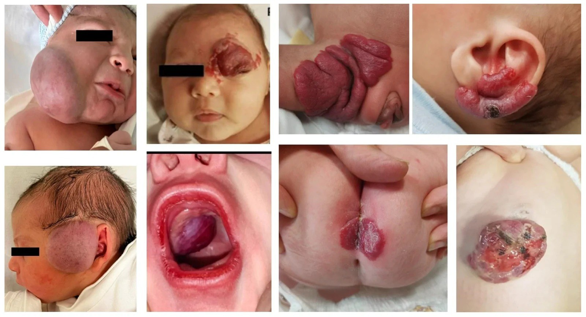
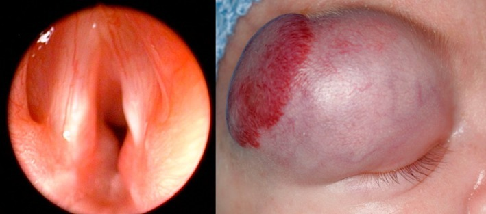

3069 — An toàn propranolol ở nhũ nhi: hạ đường huyết, nhịp chậm, tụt huyết áp và phác đồ khởi động – ngừng thuốc
Tags: pattern:u-mau-nhu-nhi pattern:ha-duong-huyet pattern:nhip-cham vung:da-dau-mat-co anatomy:thanh-quan protocol:propranolol protocol:theo-doi-sinh-hieu protocol:ngung-thuoc
Mức chắc chắn (certainty): tổng hợp y văn (literature synthesis) — ghép khuyến cáo thực hành Nhật 2026 về u máu và dị dạng mạch (J Dermatol 2026, PMC13150677), nghiên cứu hồi cứu 75 nhũ nhi khởi động propranolol (Children (Basel) 2026, PMC13702952), dữ liệu an toàn 10 năm từ FAERS (Orphanet J Rare Dis 2026, PMC13154883), 333 trẻ được sàng lọc ECG trước điều trị (Int J Pediatr 2021, PMC7929670), network meta-analysis 30 RCT (Eur J Pediatr 2026, PMC13388786), tổng quan PHACE 2025 (Orphanet J Rare Dis, PMC12232788) và 798 trẻ u máu có/không ở đường thở (Acta Paediatr 2026, PMC13250966). Không có ca do nhóm tự chụp.
Câu hỏi thực hành: bé gái 6 tuần tuổi (sinh 34 tuần, nặng 2,4 kg), u máu vùng râu lan xuống cổ, thở rít tăng dần khi khóc; nội soi thấy khối dưới thanh môn một bên. Câu hỏi: khởi động propranolol thế nào cho an toàn — liều đầu bao nhiêu, theo dõi những gì, có cần nhập viện, và nếu mẹ cho bú kém 1 ngày thì xử trí ra sao? Bài chốt ba quyết định: (1) ngưỡng biến cố là con số, không phải cảm nhận — hạ đường huyết < 45 mg/dL (2,5 mmol/L), nhịp chậm < 100 lần/phút ở trẻ < 3 tháng (hoặc giảm > 20% so với nền), tụt huyết áp khi MAP dưới bách phân vị 10 theo tuổi; (2) hai yếu tố nguy cơ mạnh nhất là TUỔI < 90 NGÀY và CÂN NẶNG < 5 kg — nhóm này cần theo dõi có giám sát, và 73% biến cố không dung nạp xảy ra trong 30 ngày đầu; (3) không ngừng đột ngột (tái phát 17%) và không ngừng quá sớm (< 9 tháng) vì nguy cơ bùng phát lại cao nhất. Nối 3005 – U máu dưới thanh môn, 3048 – U máu gan ở nhũ nhi, 3052 – U mạch máu gan bẩm sinh RICH/NICH, 3068 – Liệt dây thanh sau mổ đường thở.
1. Tổng quan bệnh học – cơ chế hình ảnh: vì sao propranolol vừa cứu vừa hại
- TẠI SAO chẹn beta không chọn lọc hạ đường huyết (vật lý – sinh lý, không phải “tác dụng phụ ngẫu nhiên”): propranolol chẹn β2 trên gan và cơ → ức chế glycogenolysis và tân tạo glucose, đồng thời chẹn β2 trên tụy → giảm tiết glucagon và giảm cảnh báo adrenergic (mất run rẩy, vã mồ hôi, nhịp nhanh). Ở nhũ nhi, dự trữ glycogen gan chỉ đủ cho vài giờ nhịn bú, nên bỏ một cữ bú do sốt/tiêu chảy là đủ để đường huyết tụt mà không có dấu hiệu cảnh báo — đây chính là cơ chế của các ca co giật hạ đường huyết trong dữ liệu FAERS.
- TẠI SAO nhịp chậm/tụt huyết áp: chẹn β1 ở nút xoang và cơ tim → giảm nhịp, giảm co bóp; chẹn β1 ở cầu thận → giảm renin → giảm aldosterone. Nhũ nhi có cung lượng tim phụ thuộc tần số hơn người lớn, nên cùng mức nhịp chậm gây tụt cung lượng nhiều hơn. Ngưỡng dùng trong nghiên cứu: nhịp chậm = nhịp < 100 lần/phút ở trẻ < 3 tháng, hoặc giảm > 20% so với nền; tụt huyết áp = MAP dưới bách phân vị 10 theo tuổi (PMC13702952).
- TẠI SAO lại dùng thuốc có nguy cơ đó — vì lợi ích rất lớn: u máu nhũ nhi gặp ở 4–5% trẻ đủ tháng và tới 23–30% trẻ sinh non; 10–15% cần điều trị vì loét, chảy máu, che trục thị giác, tắc đường thở, suy tim cung lượng cao hoặc biến dạng vĩnh viễn. Propranolol là điều trị bậc 1; trong 1.264 bệnh nhân của 41 báo cáo, đáp ứng 98%, kể cả vị trí khó (đường thở 100%, quanh mắt 98%, mặt 100%) (PMC13150677).
- Đánh đổi bằng số: trong cùng bộ dữ liệu, tái phát 17% và biến cố bất lợi 371/1.189 (31,2%); biến cố nặng gồm tụt huyết áp 44 ca, nhịp chậm 9 ca, hạ đường huyết 4 ca. Meta 18 nghiên cứu/1.839 ca: biến cố 24,52%, và 3,6% ở liều ≤ 2 mg/kg/ngày so với 86,22% ở liều 3 mg/kg/ngày — con số sau rất có thể bị nhiễu (nhóm liều cao thường là ca nặng/theo dõi sát hơn), nhưng đủ để không mặc định 3 mg/kg/ngày cho mọi trẻ (PMC13150677).
- Dữ liệu thực tế hậu mại (FAERS 2015–2024, 1.615 báo cáo): tử vong 2,40%, đe dọa tính mạng 3,06%, nhập viện 31,66%; thời gian khởi phát trung vị 10 ngày (IQR 1–82 ngày); tín hiệu mạnh nhất theo từng biến cố: hạ đường huyết 62 ca (ROR 22,95), nhịp chậm 48 ca (ROR 14,95), lạnh đầu chi 87 ca (ROR 108,73), rối loạn giấc ngủ 149 ca (ROR 32,67), kèm co giật do hạ đường huyết và hôn mê hạ đường huyết (PMC13154883). Đây là báo cáo tự nguyện (không có mẫu số) nên không đọc thành tỷ lệ mắc — chỉ đọc thành danh sách biến cố có thật và thứ tự ưu tiên theo dõi.
- TẠI SAO trẻ < 90 ngày và < 5 kg nguy hiểm hơn: dự trữ glycogen ít hơn, khối lượng phân bố thuốc nhỏ hơn (thể tích phân bố theo L/kg cao hơn), và gan chưa trưởng thành chuyển hóa → nồng độ đỉnh cao hơn. Trong 1.260 bệnh nhân dùng 2 mg/kg/ngày, 73% biến cố không dung nạp xảy ra trong 30 ngày đầu, và phân tích đa biến xác định tuổi < 90 ngày và cân nặng < 5 kg là yếu tố nguy cơ độc lập (PMC13150677).
- TẠI SAO vẫn chưa có “xét nghiệm sàng lọc” nào chứng minh hiệu quả: trong 333 trẻ được làm ECG trước điều trị, 13,9% có bất thường (chủ yếu tiêu chuẩn điện thế dày thất 35 ca), nhưng KHÔNG ca nào bị loại khỏi điều trị và chỉ 2,9% cần hội chẩn tim mạch. Số trẻ cần sàng lọc để phát hiện một block nhẫn nhĩ bẩm sinh ước tính 20.000 (PMC7929670). Tương tự, khuyến cáo Nhật 2026 kết luận không có bằng chứng cho việc ECG/echo/đường huyết thường quy giúp tránh biến cố — nhưng có bằng chứng rằng theo dõi và giáo dục phụ huynh giúp tránh biến cố nặng.
- TẠI SAO PHACE là ngoại lệ phải khác: PHACE gặp ở 2,3% u máu nhũ nhi nhưng tới 20–31% u máu dạng khoanh vùng ở đầu–mặt; bất thường động mạch 63,6–91,3%, bệnh động mạch tiến triển ~30%, và đột quỵ thiếu máu động mạch đã ghi nhận ở 15/22 bệnh nhân trong một loạt. Vì vậy PHACE cần MRA trong tháng đầu và theo dõi tới 2–3 năm; khi có tắc nghẽn đường thở nặng, khuyến cáo khởi động từ 0,5 mg/kg/ngày rồi tăng dần (PMC12232788).
2. Mẫu hình + chẩn đoán phân biệt theo bối cảnh (Gamut)
- Gamut 1 — “biến cố” trên lâm sàng (khi trẻ đang dùng propranolol mà đột ngột lừ đừ/co giật/tím): hạ đường huyết (bỏ bú, nôn, sốt) · nhiễm khuẩn huyết · nhịp chậm do thuốc hoặc block nhẫn nhĩ · tụt huyết áp do mất nước · co giật do động kinh/vôi hóa não · co giật do hạ calci/hạ natri · thiếu máu · tăng áp phổi do u máu gan lớn.
- Gamut 2 — “có nên dùng propranolol không” (chỉ định theo vị trí): đường thở (dưới thanh môn) · quanh mắt (che trục thị giác, loạn thị) · môi/miệng (loét, biến dạng) · vùng râu/cổ (nguy cơ đường thở) · vùng tã (loét, nhiễm) · gan (suy tim cung lượng cao, suy giáp tiêu thụ) · nhiều ổ/lan tỏa.
- Gamut 3 — “propranolol hay thuốc khác”: propranolol (chuẩn tham chiếu) · atenolol (chọn β1) · nadolol (tác dụng dài) · timolol tại chỗ · corticoid toàn thân (bậc 2) · sirolimus (u máu gan/KHE) · laser/xạ trị mạch.
- Bảng “một câu chốt”: u máu dạng khoanh vùng vùng râu + thở rít = u máu đường thở cho tới khi chứng minh ngược lại (33,3% u máu dạng khoanh vùng vùng râu có u máu đường thở, PMC13250966); trẻ < 90 ngày hoặc < 5 kg = nhóm cần theo dõi có giám sát; u máu đầu–mặt dạng khoanh vùng lớn = làm MRA trước khi tăng liều.
3. Bảng so sánh phân biệt (ma trận đối chiếu)
| Thực thể (entity) | Hình ảnh/biểu hiện điển hình | Chốt vào (rule-in) | Chốt loại (rule-out) | Gợi ý xác nhận |
|---|---|---|---|---|
| Hạ đường huyết do propranolol | Trẻ lừ đừ, vã mồ hôi, run, tím, co giật sau bỏ cữ bú hoặc sau tăng liều | Glucose < 45 mg/dL (2,5 mmol/L) + hết triệu chứng sau tiêm/bú glucose | Glucose bình thường khi có triệu chứng → tìm nguyên nhân khác | Đo glucose máu mao mạch ngay; ghi lại giờ bú – giờ uống thuốc |
| Nhịp chậm do chẹn beta | Nhịp đều, chậm, trẻ vẫn tỉnh; có thể kèm lạnh đầu chi | Nhịp < 100 lần/phút (< 3 tháng) hoặc giảm > 20% so với nền | Nhịp chậm kèm sốt/mất nước → nguyên nhân khác; block bẩm sinh có sóng bất thường trên ECG | ECG 12 chuyển đạo; theo dõi trước – 1 – 2 – 3 – 4 giờ sau liều |
| Tụt huyết áp do chẹn beta | Trẻ nhợt, chi lạnh, niệu ít, chậm tăng cân | MAP dưới bách phân vị 10 theo tuổi + hồi phục khi giảm/ngừng liều | MAP bình thường mà chi lạnh đơn thuần → co mạch ngoại vi (lành tính, không cần ngừng) | Đo MAP; so cân nặng – nước tiểu – thời gian làm đầy mao mạch |
| Co mạch ngoại vi (lạnh đầu chi) | Đầu chi lạnh, tím nhẹ, trẻ vẫn ăn ngủ bình thường | Lạnh đối xứng, không tụt huyết áp, không đổi màu toàn thân | Tím trung tâm, SpO₂ giảm → bệnh tim–phổi | Quan sát + đo SpO₂; không cần ngừng thuốc |
| Rối loạn giấc ngủ / ác mộng | Trẻ thức giấc nhiều, quấy, ác mộng, tăng trong tuần đầu | Xuất hiện sau khởi động, giảm dần, không ảnh hưởng bú – tăng cân | Không liên quan thời điểm dùng thuốc → tìm trào ngược, đau, thiếu sắt | Nhật ký giấc ngủ; đổi sang atenolol nếu kéo dài (ít qua hàng rào máu não) |
| Co thắt phế quản | Khò khè, ho, khó thở ở trẻ có tiền sử hen/sinh non/BPD | Khò khè tái diễn sau liều, đáp ứng thuốc giãn phế quản | Khò khè chỉ khi nhiễm virus → viêm tiểu phế quản | Nghe phổi; thử atenolol (β1 chọn) nếu bắt buộc điều trị |
| PHACE (chống chỉ định tương đối) | U máu dạng khoanh vùng S1/S3/S4, hẹp/tắc động mạch cảnh–não, hẹp eo động mạch chủ | ≥ 1 bất thường động mạch não trên MRA + u máu đầu–mặt khoanh vùng | MRA bình thường, u máu khu trú nhỏ → dùng propranolol thường quy | MRA trong tháng đầu, siêu âm tim; hội chẩn đa chuyên khoa trước khi tăng liều |
| U máu đường thở | Thở rít tiến triển, khàn, ho, nội soi: khối dưới thanh môn một bên | U máu da vùng râu/cổ + thở rít + khối dưới thanh môn | Nội soi bình thường + không u máu da → tìm nguyên nhân khác | Nội soi mềm; propranolol là điều trị đầu tay, 80% đủ (PMC13250966) |
| Tái phát sau ngừng thuốc | U máu đỏ/lớn lại sau khi giảm liều hoặc ngừng | Lớn lại trong vòng vài tuần sau giảm/ngừng | Lớn lại do u máu mới ở vị trí khác | Chụp ảnh chuẩn hóa; khởi động lại 2 mg/kg/ngày và kéo dài ≥ 6 tháng |

*Tám thể biến chứng tạo nên chỉ định dùng propranolol: khối lớn vùng mặt (biến dạng), ổ loét quanh mắt (che trục thị giác + loét), khối ở bàn tay và vành tai (loét, chảy máu), khối vùng thái dương, khối dưới thanh môn (ảnh nội soi hàng dưới, thứ hai từ trái), vùng tã (loét + nhiễm). Đây là lý do không được “chờ tự thoái triển” ở các vị trí này. Nguồn: Children (Basel) 2026 (PMC13702952), CC BY, nguyên bản.*4. Protocol khởi động – theo dõi – ngừng thuốc
- Bước 0 — trước liều đầu tiên:
| Việc | Ngưỡng / nội dung | Vì sao |
|---|---|---|
| Tuổi – cân nặng | < 5 tuần tuổi (hoặc < 45 tuần tuổi hiệu chỉnh) hoặc < 5 kg → cân nhắc theo dõi nội trú | Yếu tố nguy cơ độc lập; 73% biến cố trong 30 ngày đầu |
| Hỏi bệnh | Hen/khò khè tái diễn, block nhẫn nhĩ, nhịp chậm, suy tim, hẹp eo động mạch chủ, tiền sử gia đình đột tử/loạn nhịp, mẹ dùng thuốc chống loạn nhịp | Chống chỉ định/nguy cơ |
| Khám | U máu dạng khoanh vùng S1/S3/S4 → tìm PHACE: chụp/MRA não trong tháng đầu, siêu âm tim | PHACE: bệnh động mạch tiến triển ~30%, đột quỵ đã ghi nhận |
| ECG | Không thường quy; làm khi nhịp chậm, loạn nhịp, bệnh tim, tiền sử gia đình | 13,9% bất thường nhưng 0 ca bị loại khỏi điều trị; NNS 20.000 (PMC7929670) |
| Đường huyết | Không thường quy trước liều ở trẻ khỏe; bắt buộc đo nếu trẻ bú kém/nôn/sinh non | Không có bằng chứng lợi ích sàng lọc, nhưng hạ đường huyết là biến cố chết người |
- Bước 1 — liều và cách tăng: khởi đầu 0,5–1 mg/kg/ngày, chia 2 lần, tăng mỗi tuần theo dung nạp tới đích 3 mg/kg/ngày (hoặc 2 mg/kg/ngày nếu dung nạp kém). Ở trẻ < 45 tuần tuổi hiệu chỉnh hoặc u máu đường thở nặng: bắt đầu 0,5 mg/kg/ngày rồi tăng chậm (PMC13702952, PMC12232788).
- Bước 2 — theo dõi mỗi lần khởi động/tăng liều (bắt buộc):
- Cho bú trước liều 20–30 phút, không bao giờ cho thuốc lúc bụng đói; khoảng cách giữa các cữ bú không quá 4–6 giờ ở trẻ nhỏ.
- Đo nhịp tim, huyết áp, SpO₂, glucose trước liều và tại 1, 2, 3, 4 giờ sau liều; quan sát lâm sàng 4–6 giờ.
- Lặp lại quy trình này mỗi tuần trong tháng đầu, mỗi lần tăng liều, và mỗi lần điều chỉnh theo cân nặng; sau khi đạt liều đích: khám hàng tháng.
- Bước 3 — “quy tắc ngày ốm” (quan trọng nhất để tránh hạ đường huyết): khi trẻ sốt, nôn, tiêu chảy, bú < 50% cữ bình thường → TẠM NGỪNG propranolol cho tới khi ăn uống lại bình thường; nếu trẻ lừ đừ/co giật → đo glucose mao mạch ngay, xử trí glucose, và ngừng thuốc.
- Bước 4 — thời điểm và cách ngừng: điều trị tới 12–18 tháng tuổi; giảm liều từ từ trong 2–4 tuần (không ngừng đột ngột). Nguy cơ lớn lại cao nhất khi ngừng trong 9 tháng đầu, thấp nhất khi ngừng 12–18 tháng (PMC13150677). Nếu lớn lại: khởi động lại 2 mg/kg/ngày và kéo dài ≥ 6 tháng (PMC7929670).
- Bước 5 — phương án thay thế khi không dung nạp: atenolol (chọn β1, ít qua hàng rào máu não → ít hạ đường huyết, ít rối loạn giấc ngủ; NMA: OR biến cố 0,56, KTC 0,26–1,43) · timolol tại chỗ cho tổn thương nông, khu trú · corticoid toàn thân là bậc 2 nhưng biến cố cao hơn nhiều (OR 52,92, KTC 3,12–2.874,40) · nadolol có báo cáo tử vong do tích lũy ở nhũ nhi → không dùng thường quy (PMC13388786).
flowchart TD
A[U máu nhũ nhi cần điều trị] --> B{Tuổi hiệu chỉnh dưới 45 tuần hoặc cân nặng dưới 5 kg?}
B -->|Có| C[Theo dõi nội trú khi khởi động, liều đầu 0,5 mg/kg/ngày]
B -->|Không| D[Khởi động ngoại trú 1 mg/kg/ngày, chia 2 lần]
C --> E[Cho bú trước liều 20-30 phút]
D --> E
E --> F[Đo nhịp tim, huyết áp, SpO2, glucose trước liều và 1-2-3-4 giờ sau]
F --> G{Glucose dưới 45 mg/dL hoặc nhịp dưới 100 lần/phút hoặc MAP dưới bách phân vị 10?}
G -->|Có| H[Ngừng liều, xử trí glucose, hạ liều hoặc đổi atenolol, hội chẩn]
G -->|Không| I[Tăng liều mỗi tuần tới 3 mg/kg/ngày theo dung nạp]
I --> J{Trẻ sốt, nôn, bú kém?}
J -->|Có| K[Tạm ngừng thuốc tới khi ăn uống bình thường]
J -->|Không| L[Tiếp tục, khám hàng tháng, chỉnh liều theo cân nặng]
L --> M{Đủ 12-18 tháng?}
M -->|Chưa| L
M -->|Rồi| N[Giảm liều trong 2-4 tuần, không ngừng đột ngột]
N --> O{U máu lớn lại?}
O -->|Có| P[Khởi động lại 2 mg/kg/ngày, kéo dài ít nhất 6 tháng]
O -->|Không| Q[Theo dõi tới 3 tuổi, chụp ảnh chuẩn hóa]

Trái: u máu dưới thanh môn gây hẹp nặng đường thở ở trẻ sinh 27 tuần, 800 g — đây là chỉ định không thể chờ; phải khởi động propranolol (kèm corticoid) và theo dõi đường thở. Phải: u máu quanh mắt — chỉ định vì che trục thị giác/loét giác mạc. Nguồn: Acta Paediatr 2026 (PMC13250966), CC BY-NC-ND 4.0, nguyên bản (không crop, không ghép).- Số liệu để tư vấn phụ huynh (nói bằng lời, không đọc bảng): đáp ứng ~98%; 17% lớn lại sau ngừng; ~25–31% có ít nhất một biến cố (đa số nhẹ: rối loạn giấc ngủ, lạnh đầu chi, tiêu chảy); biến cố nặng (hạ đường huyết có triệu chứng, nhịp chậm, tụt huyết áp) hiếm nhưng có thể xảy ra trong 30 ngày đầu; nguy cơ giảm mạnh nếu cho bú đúng cữ, tạm ngừng khi ốm và theo dõi 4–6 giờ sau mỗi lần tăng liều.
5. Biến thể bình thường và cạm bẫy
- Bẫy 1 — cho thuốc lúc bụng đói “cho dễ uống”: đây là cơ chế số một của hạ đường huyết; luôn bú trước 20–30 phút và không để trẻ nhịn > 4–6 giờ.
- Bẫy 2 — coi “hạ đường huyết không triệu chứng là vô hại”: trong loạt 75 trẻ, 5 ca hạ đường huyết không triệu chứng, tự hết khi cho bú (PMC13702952) — nhưng FAERS có co giật và hôn mê hạ đường huyết, và di chứng thần kinh là lý do phải dặn phụ huynh ngừng thuốc khi bú kém, không chờ xét nghiệm.
- Bẫy 3 — giảm liều đột ngột khi trẻ “đã khỏi”: tái phát 17%, và nguy cơ cao nhất khi ngừng trong 9 tháng đầu; giảm trong 2–4 tuần, không cắt ngay.
- Bẫy 4 — dùng 3 mg/kg/ngày cho mọi trẻ: nhóm ≤ 2 mg/kg/ngày có biến cố 3,6% so với 86,22% ở liều 3 mg/kg/ngày (dữ liệu có nhiễu, nhưng đủ để bắt đầu thấp và tăng dần).
- Bẫy 5 — làm ECG cho mọi trẻ rồi trì hoãn điều trị: 333 trẻ, 13,9% ECG bất thường nhưng 0 ca bị loại; trì hoãn ở u máu đường thở/quanh mắt có hại thật (mù, tắc đường thở) trong khi lợi ích ECG chưa được chứng minh.
- Bẫy 6 — gắn nhãn “hen” rồi cấm propranolol vĩnh viễn: khò khè sau nhiễm virus ở nhũ nhi không đồng nghĩa hen; nếu thật sự cần điều trị, atenolol là lựa chọn (ít co thắt phế quản do chọn β1).
- Bẫy 7 — bỏ qua PHACE ở u máu đầu–mặt dạng khoanh vùng: 20–31% u máu khoanh vùng đầu–mặt có PHACE; bệnh động mạch tiến triển ~30%; phải MRA trong tháng đầu trước khi tăng liều.
- Bẫy 8 — “u máu vùng râu chỉ là ngoài da”: 33,3% u máu dạng khoanh vùng vùng râu có u máu đường thở; 38,5% ca u máu đường thở lại có tổn thương khu trú quanh môi/mũi — tức không có u máu vùng râu vẫn có thể có u máu đường thở (PMC13250966).
- Bẫy 9 — cho rằng propranolol thay thế được mọi thứ: 20% u máu đường thở cần thêm corticoid toàn thân, và 1 ca phải mở khí quản, cai ống sau 62 ngày với tiêm corticoid tại chỗ (PMC13250966) — luôn có kế hoạch đường thở song song.
- Bẫy 10 — nhầm “lạnh đầu chi” với sốc: lạnh đầu chi đối xứng, trẻ tỉnh, huyết áp bình thường là tác dụng dược lý lành tính (ROR 108,73 — tín hiệu mạnh nhất trong FAERS nhưng không nguy hiểm); không ngừng thuốc chỉ vì bàn tay lạnh.
6. Tự lượng giá — Blind Quiz
Ca 1 — Bé gái 6 tuần tuổi (sinh 34 tuần), u máu vùng râu lan cổ, thở rít tăng khi khóc. Nội soi và ảnh lâm sàng:
- Hỏi: chẩn đoán? Có được “theo dõi tự thoái triển” không? Liều khởi đầu và nơi theo dõi?
Bấm để hiện đáp án
- U máu dưới thanh môn (kèm u máu da vùng râu) — chỉ định điều trị ngay, không chờ: nguy cơ tắc đường thở cấp.
- Trong loạt 798 trẻ: u máu đường thở 1,6%; u máu dạng khoanh vùng vùng râu → 33,3% có u máu đường thở; 80% đủ điều trị bằng propranolol, 20% cần thêm corticoid, 1 ca phải mở khí quản (cai ống sau 62 ngày).
- Vì trẻ < 45 tuần tuổi hiệu chỉnh và < 5 kg: khởi động 0,5 mg/kg/ngày, theo dõi nội trú 4–6 giờ sau liều, đo nhịp – huyết áp – SpO₂ – glucose tại 1, 2, 3, 4 giờ; bú trước liều 20–30 phút.
- Nguồn: Acta Paediatr 2026 (PMC13250966) + Children (Basel) 2026 (PMC13702952), CC BY / CC BY-NC-ND.
Ca 2 — Bé trai 3 tháng, u máu gan lớn đang dùng propranolol 3 mg/kg/ngày. Mẹ báo trẻ sốt 38,5 °C, bỏ 2 cữ bú, ngủ li bì.
- Hỏi: xử trí trong 10 phút đầu? Sau đó chỉnh thuốc thế nào?
Bấm để hiện đáp án
- Đo glucose mao mạch ngay; nếu < 45 mg/dL (2,5 mmol/L) → glucose tĩnh mạch/uống, theo dõi lại; tạm ngừng propranolol trong đợt ốm.
- Đây là “quy tắc ngày ốm”: sốt + bỏ bú = giảm dự trữ glycogen + ức chế tân tạo glucose do chẹn β2 → hạ đường huyết, và mất dấu hiệu cảnh báo adrenergic nên trẻ không vã mồ hôi, không nhịp nhanh, chỉ li bì.
- Sau khi hồi phục: khởi động lại ở liều thấp hơn (ví dụ 1–2 mg/kg/ngày) rồi tăng chậm; cân nhắc giảm liều đích vì liều 3 mg/kg/ngày có tỷ lệ biến cố cao hơn rõ rệt trong dữ liệu gộp.
- Phản biện: dữ liệu FAERS không có mẫu số nên không được nói “3 mg/kg/ngày gây biến cố 86%”; con số 86,22% đến từ một meta phân tích nhóm liều, có nhiễu chỉ định — dùng để cảnh giác, không dùng để kết tội liều.
- Nguồn: Children (Basel) 2026 (PMC13702952); J Dermatol 2026 (PMC13150677); Orphanet J Rare Dis 2026 (PMC13154883).
Ca 3 — Trẻ 2 tháng, u máu dạng khoanh vùng nửa mặt phải (S1), đang tăng liều propranolol. Trước đó chưa chụp mạch não.
- Hỏi: vì sao phải dừng tăng liều để làm thêm xét nghiệm? Xét nghiệm gì, khi nào?
Bấm để hiện đáp án
- U máu dạng khoanh vùng S1 là vùng nguy cơ cao của PHACE; bất thường động mạch 63,6–91,3%, bệnh động mạch tiến triển ~30%, đột quỵ thiếu máu động mạch đã ghi nhận (15/22 trong một loạt). Hạ huyết áp do propranolol trên nền hẹp/tắc động mạch cảnh–não là nguy cơ đột quỵ.
- Làm MRI/MRA não trong tháng đầu + siêu âm tim (tìm hẹp eo động mạch chủ, bất thường quai); theo dõi hình ảnh tới 2–3 năm; nếu nhóm nguy cơ cao, cân nhắc aspirin 3–5 mg/kg/ngày theo khuyến cáo chuyên khoa.
- Nếu có tắc nghẽn đường thở nặng phối hợp: vẫn có thể dùng propranolol nhưng khởi động 0,5 mg/kg/ngày và tăng rất chậm, có hội chẩn đa chuyên khoa.
- Nguồn: Orphanet J Rare Dis 2025 (PMC12232788), CC BY 4.0.
Bài liên quan chéo
- 3005 – U máu dưới thanh môn ở nhũ nhi
- 3048 – U máu gan ở nhũ nhi
- 3052 – U mạch máu gan bẩm sinh (RICH/NICH)
- 3068 – Liệt dây thanh sau phẫu thuật đường thở ở trẻ
- 1804 – Suy giáp tiêu thụ do D3
- 606 – BPD ở trẻ sinh non
Không dùng để chẩn đoán độc lập khi chưa có người hướng dẫn.